the process of writing stupidly performant apps applied to web servers
by Ryan Alport
a program that listens on a port, reads HTTP requests, and writes HTTP responses.
you interact with nginx, apache, cloudflare, caddy, or IIS hundreds of times a day.
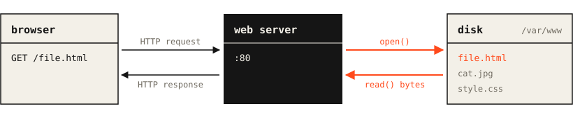
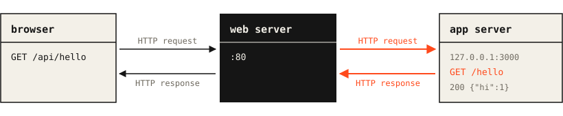
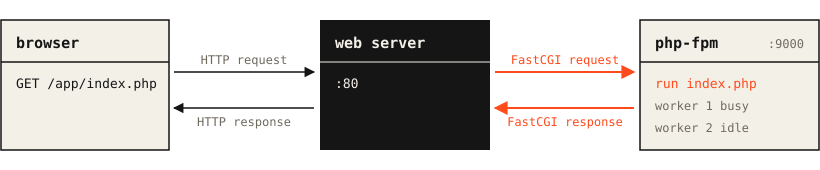
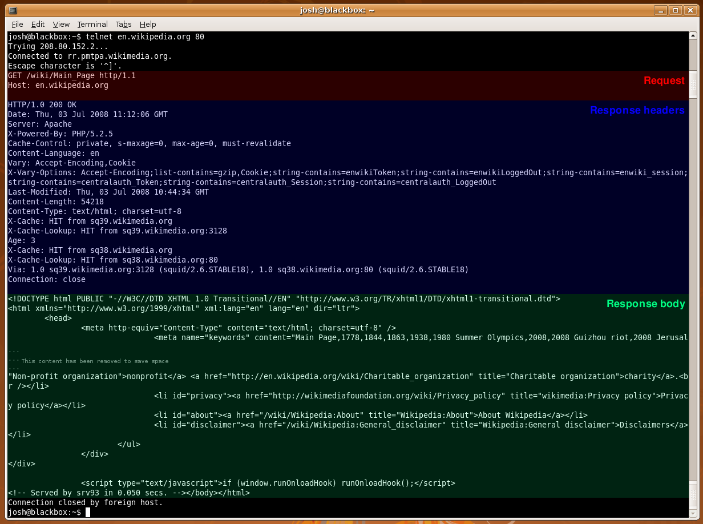
GET /cat.jpg HTTP/1.1 Host: iheartcomputer.club Connection: keep-alive Accept: image/*
HTTP/1.1 200 OK Content-Length: 42817 Content-Type: image/jpeg <42817 bytes>
key: value, one per line, a blank line ends themContent-Length200 OK, 404 Not Found, ... (full list)int fd = socket(AF_INET, SOCK_STREAM, 0);
bind(fd, (struct sockaddr *)&addr, sizeof(addr));
listen(fd, 128);
while (1) {
int c = accept(fd, NULL, NULL);
handle(c);
close(c);
}
this is a totally valid webserver that can now serve pages to the browser.
lets benchmark it...
when benchmarking, we should test our app through realistic workloads. we will then compare it against apache and nginx on the same workload.
we will use wrk, an http benchmarking program that reports requests per second and a latency distribution.
cases we will test:
Connection: close. an accept and a close every request/no/such/file, 64 clients.other real world considerations:
simplest possible server performance:
while one client is being handled, everyone else is stuck in the listen backlog.
it would be lovely if we could do two things at once...
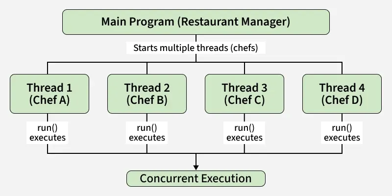
we can now seperate responsibilites and handle more than one connection at a time, but this requires careful architecting.
how will we fairly and quickly distribute connections between some number of worker threads?
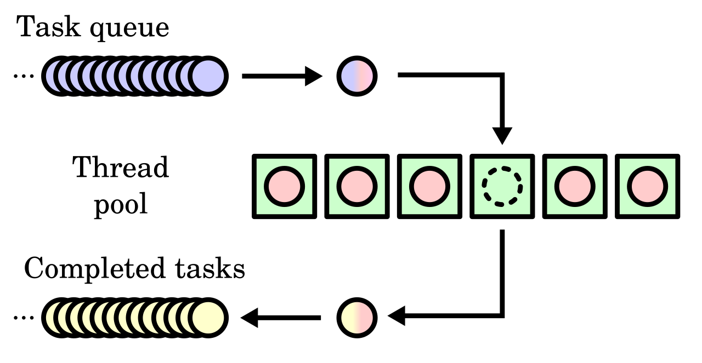
if (__atomic_compare_exchange_n(&q->head_id, &pos, pos + 1, 0,
__ATOMIC_RELAXED, __ATOMIC_RELAXED)) {
connection_copy_payload(c, slot);
__atomic_store_n(&slot->ready, 0, __ATOMIC_RELEASE);
return 1;
}
a worker claiming the next slot. gcc __atomic builtins
compare-and-swap lets us only claim a slot if no one else has changed it since our last look.
concurrent server performance:
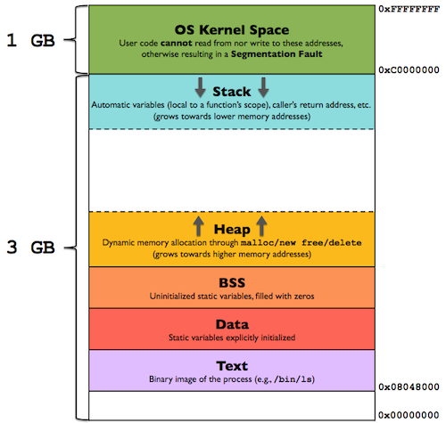
in low level programs we must reserve all the memory we will need when we start the program or we may use the operating system's dynamic memory manager.
malloc is the interface for getting an arbitrary ammount of memory at runtime. the common pattern:
request = malloc(...); headers = malloc(...); path = malloc(...); ... free(path); free(headers); free(request);
this takes a lot of time and it can leave our heap fragmented, ie. even slower :(
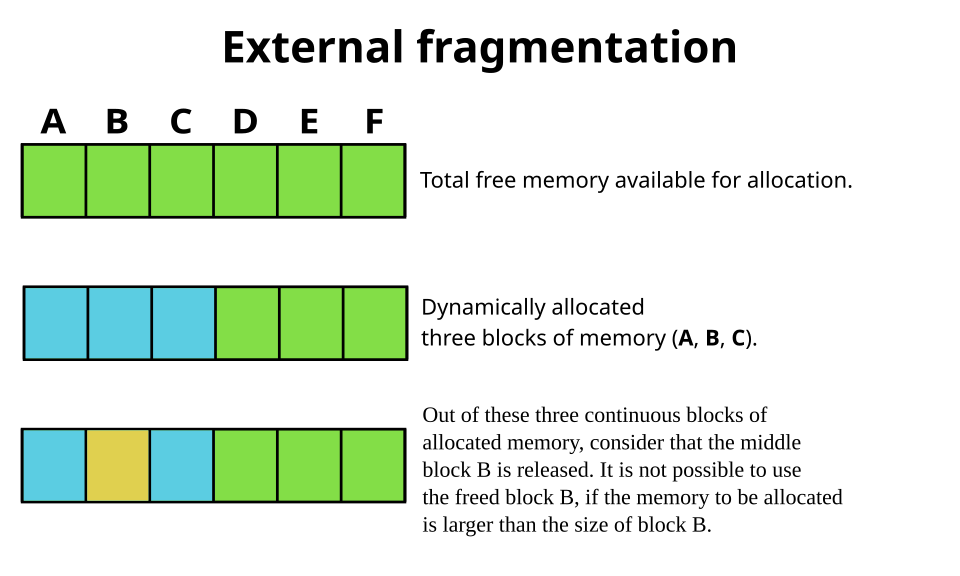
one solution is to reserve a large part of memory ourselves once at the beginning of our program, then manually manage it as we work.
the humble bump arena is perfect for this use case
void *bump_alloc(bump *b, uint64_t size, uint64_t alignment) {
...
b->offset = offset + size;
return (void *)aligned;
}
void bump_reset(bump *b) {
b->offset = 0;
}
we can give each thread a bump arena which it can use for a whole request, then restart in only a few CPU cycles.
no malloc server performance:
just because we have a connection doesn't mean there is any work to do.
read(fd, buf, len); /* and if nothing has arrived yet? */
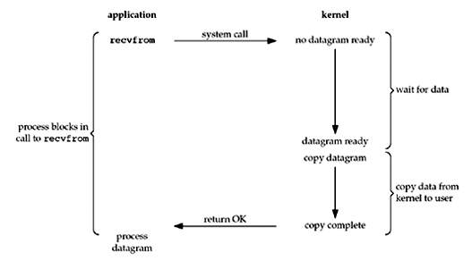
we need the operating system to tell us which sockets are actually ready.
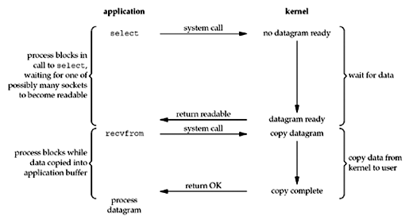
n = epoll_wait(epfd, events, TINY_EPOLL_EVENTS_MAX, timeout);
for (i = 0; i < n; i++) {
handle(events[i].data.u32);
}
we can make every socket nonblocking, then each worker can use epoll to watch theoretically thousands of connections at once, then we only do work when one is ready.
epoll server performance:
the naive way to get a file from our disk to the network is to read it into our program's memory, then write it out to the connection port.
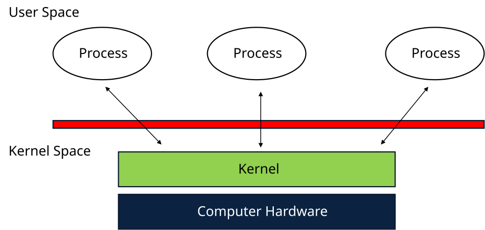
so we read from the operating system, then we write directly back to the operating system? there must be a smarter way...
sendfile(sock_fd, file_fd, &offset, count);
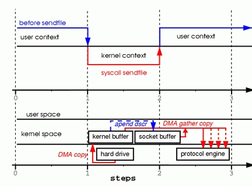
sendfile server performance:
despite sendfile, we still do need to operate on the actual file in order to return a proper http response.
open("index.html");
fstat(fd, ...);
close(fd);
if we could just save the information we need about the file after we serve it, we could remove more syscalls.
typedef struct {
uint64_t hash;
off_t size;
const char *mime;
int32_t fd;
char path[192];
...
} cached_file;
caching server performance:
the CPU has the illusion that it operates on contiguous linear memory, but this is a lie. in reality, there are a series of caches finally culminating in 64 byte cache lines which the cpu can actually use.
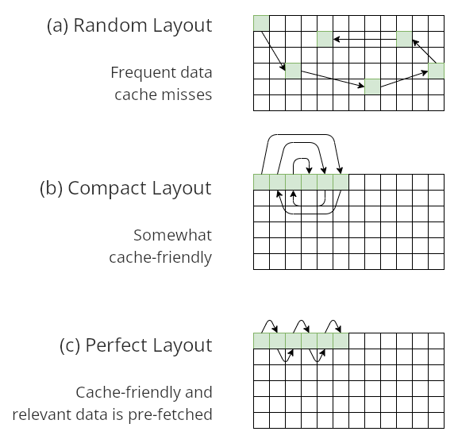
we play a delicate game of fitting as many relevant bytes into a cache line as we can, then doing as much work on it as we can before we go to the next one.
with threads, we have another challenege, false sharing, threads on different cores may update a line, immediately invalidating any other thread's copy of that same line.
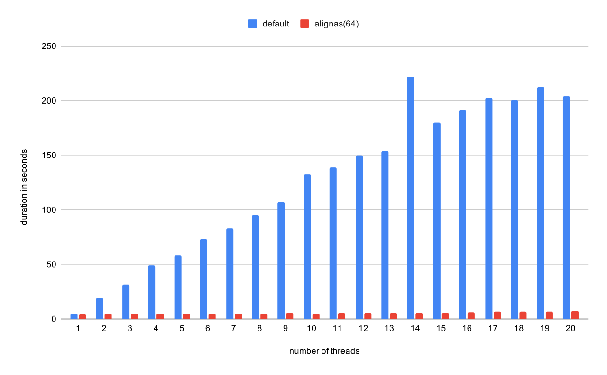
so how can we write code that avoids the pitfalls and takes advantage of the cache?
a few fun examples:
typedef struct {
connection *data;
uint32_t capacity;
uint64_t head_id __attribute__((aligned(64)));
uint64_t tail_id __attribute__((aligned(64)));
} connection_queue;
putting the queue head and tail ids in their own line to avoid false sharing
typedef struct http_conn {
connection conn;
bump *arena;
char *buf;
uint32_t used;
uint8_t phase;
uint8_t keep;
int32_t file_fd;
char header_buf[TINY_HEADER_SIZE];
} http_conn;
putting hot http metadata before the request buffer so common operations touch fewer cache lines
typedef struct {
pthread_t thread;
uint32_t id;
int32_t status;
tiny_runtime *rt;
tiny_slot *slots;
} __attribute__((aligned(TINY_CACHE_LINE))) tiny_worker;
aligning each worker to a cache line size so neighboring workers can never share cache lines
yet another lie the CPU beleives is that instructions execute one at a time. in reality parts of instructions are being executed, a few at a time.
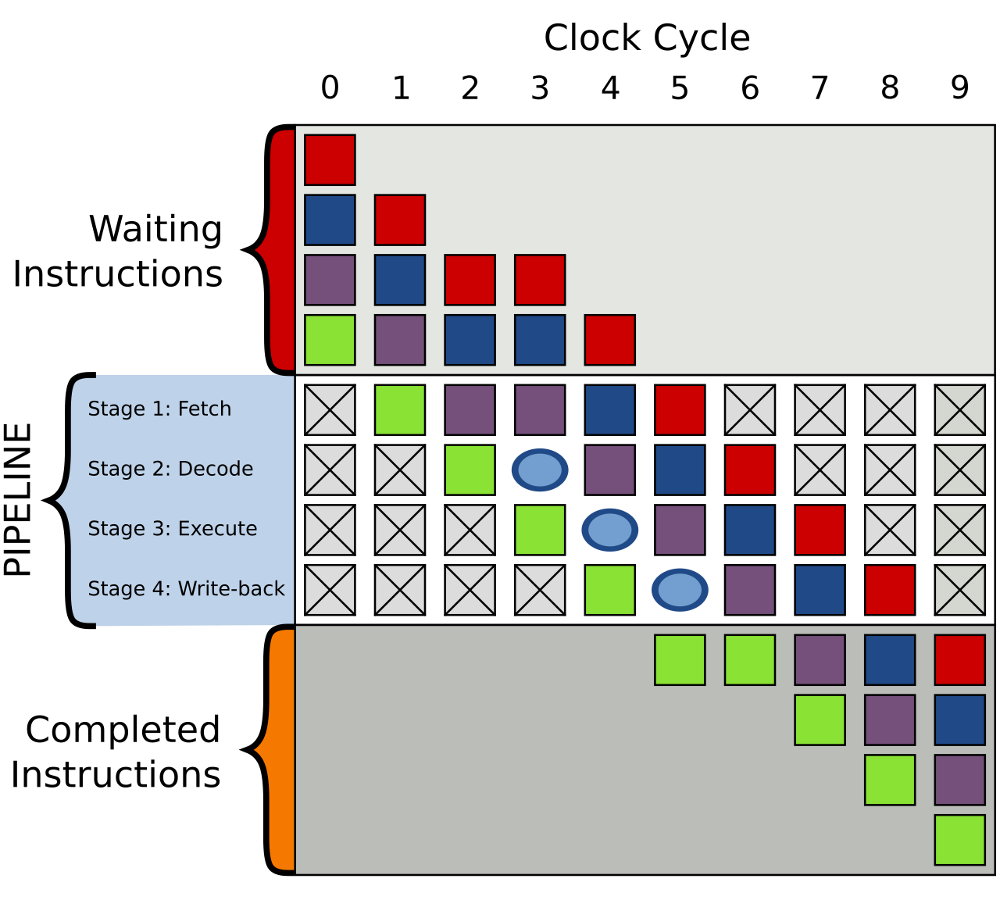
this introduces hazards, a conditional may depend on a previous instruction, should the CPU just wait?
if (x > y)
return x;
return y;
NO! the CPU guesses which way a branch goes and keeps working. if it guesses right, great, if not, catastrophe.
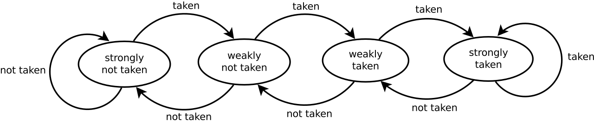
we would like to avoid catastrophes so we should write code that either avoids conditionals entirely, calculates the compared items well in advance, or takes the same path the vast majority of the time.
//normal
int min(int a, int b) {
if (a < b) {
return a;
} else {
return b;
}
}
// branchless
int min(int a, int b) {
return b ^ ((a ^ b) & -(a < b));
}
I generally do not reccomend writing assembly from scratch, the compiler is incredibly good at finding optimizations and assembly is hard.
that said, understanding and being able to read generated assembly does open the door to more optimizations...
cmov vs jmp:
conditionals are effectively implemented with the jmp class of instructions, a bonus way to avoid branches is to replace jumps with conditional moves.
cmp edi, esi ; compare a and b (a - b) jle .L2 ; jump to .L2 if a <= b mov eax, edi ; if a > b, move a into return register (eax) ret .L2: mov eax, esi ; if a <= b, move b into return register (eax) ret
mov eax, esi ; assume b is larger (move b to eax) cmp edi, esi ; compare a and b cmovg eax, edi ; if a > b (greater), overwrite eax with a ret
faster math:
your compiler most likely does this already but we can take advantage of the binary system for multiplication, division, modulo, etc.
shl eax, 1 ; x * 2 shl eax, 3 ; x * 8 shr eax, 1 ; x / 2 and eax, 127 ; x % 128 lea eax, [eax + eax*4] ; x * 5 lea eax, [eax + eax*4] ; x * 10 add eax, eax cmp eax, ebx ; min(a, b) cmovg eax, ebx cmp eax, ebx ; max(a, b) cmovl eax, ebx cdq ; abs(x) xor eax, edx sub eax, edx
specialized instructions:
there are thousands of x86 instructions, some built for super highly specific operations from string comparison to polynomial evaluation.
mov eax, [packet_buffer + 12] ; load IP address from network buffer bswap eax ; instantly flip the bytes to x86 order ; RDI = memory address mapped directly to network card queue ; RAX = prepared network packet transmission command movdiri [rdi], rax ; direct write to NIC without touching cpu cache ; accumulate net packet data into rolling hardware checksum crc32 rax, qword ptr [rsi] ; hashes 8 bytes into RAX instantly
vector operations:
your modern CPU is capable of executing SIMD operations using vector registers to operate on multiple items at the same time on a single core.
; find http header boundaries stupid fast
vpcmpiand xmm1, xmm1, xmm1 ; clear target register with \r and \n
vmovdqu xmm2, [rsi] ; load 16 bytes from network buffer
vpcmpistri xmm1, xmm2, 0x00 ; scan and place \r or \n index in ECX.
; k1 = mask register
; ZMM0 = 16 IPv4 addresses loaded from network logs
vpcompressd zmm1 {k1}, zmm0 ; filters ZMM0 through k1. matches go in ZMM1
| static, req/s | tiny | nginx | apache | tiny/nginx | tiny/apache |
|---|---|---|---|---|---|
| small | 396,715 | 289,063 | 52,178 | 1.37x | 7.60x |
| small_close | 92,556 | 41,284 | 43,401 | 2.24x | 2.13x |
| medium | 152,551 | 104,661 | 69,214 | 1.46x | 2.20x |
| large | 19,572 | 18,047 | 14,998 | 1.08x | 1.30x |
| not_found | 414,664 | 274,674 | 117,481 | 1.51x | 3.53x |
| high_c | 521,103 | 303,636 | 101,512 | 1.72x | 5.13x |
| latency, p50 / p99 | tiny | nginx | apache |
|---|---|---|---|
| small | 111us / 523us | 159us / 550us | 1.22ms / 4.10ms |
| high_c | 334us / 1.33ms | 413us / 3.09ms | 2.06ms / 8.95ms |
| proxy, req/s | tiny | nginx | apache | tiny/nginx | tiny/apache |
|---|---|---|---|---|---|
| small | 150,179 | 131,617 | 66,229 | 1.14x | 2.27x |
| small_close | 63,609 | 38,622 | 43,889 | 1.65x | 1.45x |
| high_c | 204,764 | 199,517 | 88,057 | 1.03x | 2.33x |